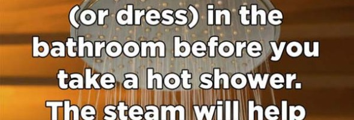

Ashley是霍比特人的忠实粉丝，有一天，他感觉很无聊，于是决定建一个属于他自己的霍比特式地窖。
就算你不是J.R.R.Tolkein的粉丝，你看了这个应该也会喜欢。这是他的成品，怎么样？你也想有一个
自己的霍比特地窖吗？首先需要确定位置，Ashley院里的一棵苹果树死了，他决定把它拔起来，它根
部空着的位置刚刚好用来建造地窖。在把场地清扫干净后，他们搭了个木制框架用来支撑这个建筑。
随后他们又把洞继续往下挖深了些。前期花了...